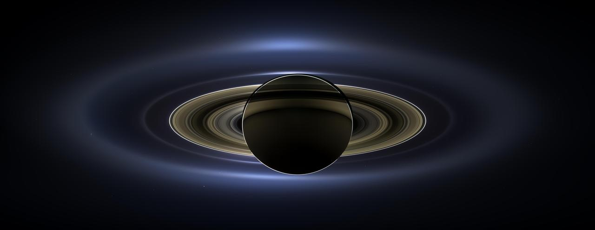
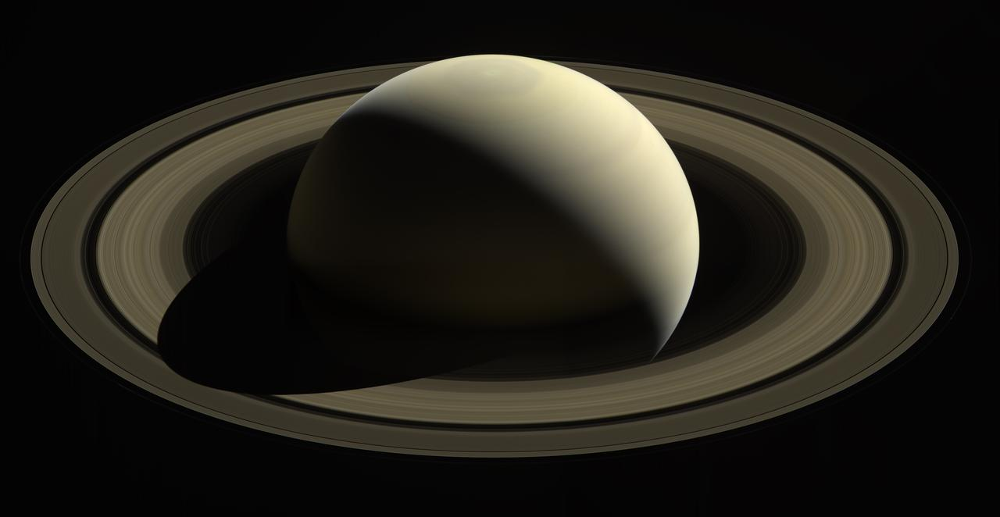
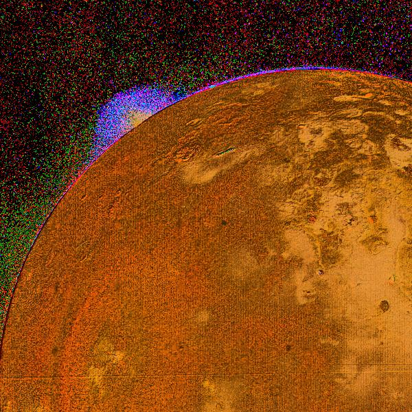
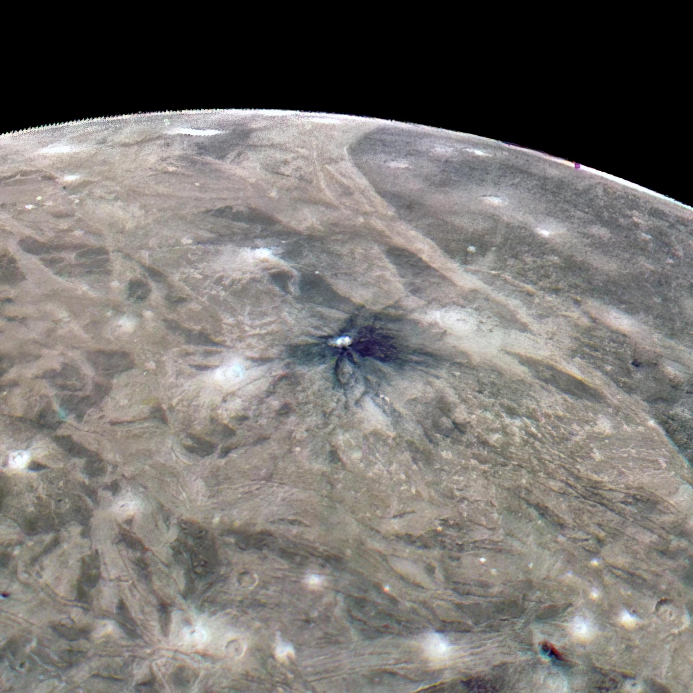

2 gigantplaneter
Saturn
Saturn er den nest største planeten i solsystemet vårt, og den er kjent for sine imponerende ringer. Den består hovedsakelig av hydrogen og helium, og har 90 måner, inkludert Titan. Saturns atmosfære er preget av sterke vinder og stormer. Planeten er oppkalt av den greske guden Saturnus, som var guden for landbruk og tid. Saturn består av flere måner, blant annet Titan, som her finnes illustrert. Andre måner er Mimas, Rhea, Iapetus, og Enceladus.
Se faktaBilder



Den største planeten
Jupiter
Jupiter er den største planeten i solsystemet vårt. Den er en gasskjempe som hovedsakelig består av hydrogen og helium, og er kjent for Den store røde flekken, en enorm storm. Jupiter har mange måner, blant annet Io og Ganymedes, som er vist i bildene nedenfor.
Se faktaBilder


